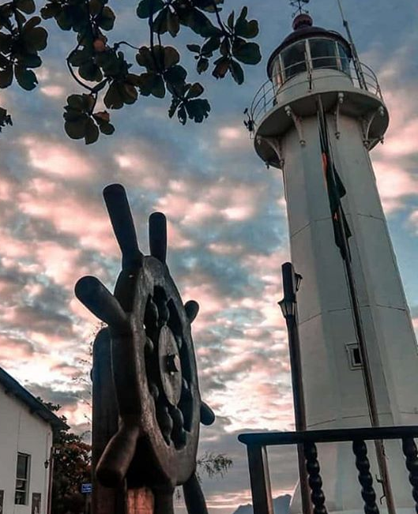
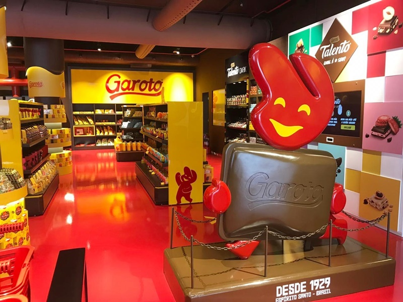

Nosso principal ponto turístico, localizado em Vila Velha em cima de um morro de 154 metros de altura, cercado pela Mata Atlântica e com uma vista de tirar o folêgo, temos o Convento da Penha .
No morro oposto o do Convento da Penha, temos o Morro do Moreno. Com vista a baía de Vitória e também para a 3ª ponte.
Em seguida temos o Farol que fica pertinho do Morro do Moreno. Além do Farol e de uma vista para o mar de Vila Velha nas paredas há nós de marinheiros, âncoras, leme, artefatos que simulam uma embarcação e uma lojinha de lembrancinhas.

Em Vila Velha, temos mais um ponto turístico para toda a família. A fábrica garoto tem o museu, lojinha e chocotuor, para saber mais detalhes, horários e preços entre no site https://www.garoto.com.br/visite-a-fabrica

Localizado em Jardim Camburi, o parque botânico tem mais de 140 espécies de árvores compõem a flora diversificada com destaque para o pau-brasil, jacarandá e ipê. O Parque oferece diversas atrações aos visitantes, como trilhas ecológicas guiadas, visita ao Complexo de Tubarão, parque de diversão infantil ecologicamente correto e uma programação de exposições temáticas.
Com uma vista panorâmica de Vitória, o Projeto Tamar tem um roteiro interpretativo com muitas informações a respeito das ações de pesquisa e conservação das tartarugas marinhas no Brasil, biologia das espécies e espaços temáticos que evidenciam todo o ciclo de vida das tartarugas.
Inaugurado em 2022, o Bistrô chama muita atenção com sua decoração única, sua gastronomia e sua bela vista de frente para o porto de Vitória.
Uma das formas mais legais de conhecer as belíssimas praias de Guarapari é através de um clássico passeio de Escuna